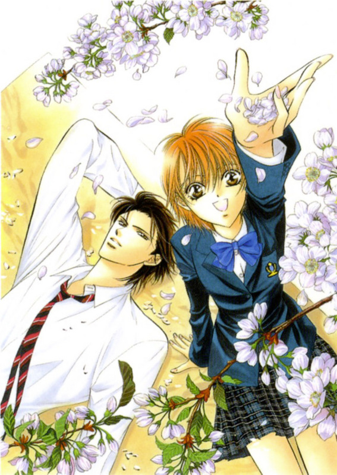

- Alternative Names: Skip Beat!
Author(s): Nakamura Yoshiki
Genres: Comedy, Drama, Romance, Shoujo, Slice Of Life
Release: 2002
Status: Current
Type: Manga
Length: 32 Volumes 193Chapters
Read Online @:


More Info @:

Notes
After being treated as a maid for her childhood love, Sho who is now a famous singer, and then thrown away; Kyoko swears to enter the show biz world and make him grovel at her feet! How will she be accepted into an agency when she does not event know what she wants to do? When asked what section she has in mind she replies: singing - "I prefer listening to it," acting - "not interested," talent - "I'm basically against it." At which point the agent tries to cast her outside the agency. Kyoko's determination is amazing in how she hunts him down later and in the next week or so torturing him and his household with weird noises at night etc until he breaks down and lets her take the entrance audition. Very exciting and hillarious series that you just can't help but love!